On commence par vous écouter
Avant le premier geste, Christine prend le temps de comprendre où vous en êtes : fatigue, tensions, besoin de souffler. Chaque séance part de vous, jamais d’un protocole figé.
Centre de relaxation · La Tour-d’Aigues
Massothérapie, madothérapie et lâcher-prise,
au cœur du Luberon.
L’esprit Badira
Avant le premier geste, Christine prend le temps de comprendre où vous en êtes : fatigue, tensions, besoin de souffler. Chaque séance part de vous, jamais d’un protocole figé.
Très douce quand il le faut, profonde quand le corps le demande. La pression s’ajuste en permanence, au rythme de votre respiration.
Relaxation, madothérapie aux instruments en bois, massage drainant, récupération sportive : une palette de techniques, choisie selon votre état du jour.
« Je suis repartie en mode “chamallow” et qu’est-ce que ça fait du bien ! »Karine M. · avis Google
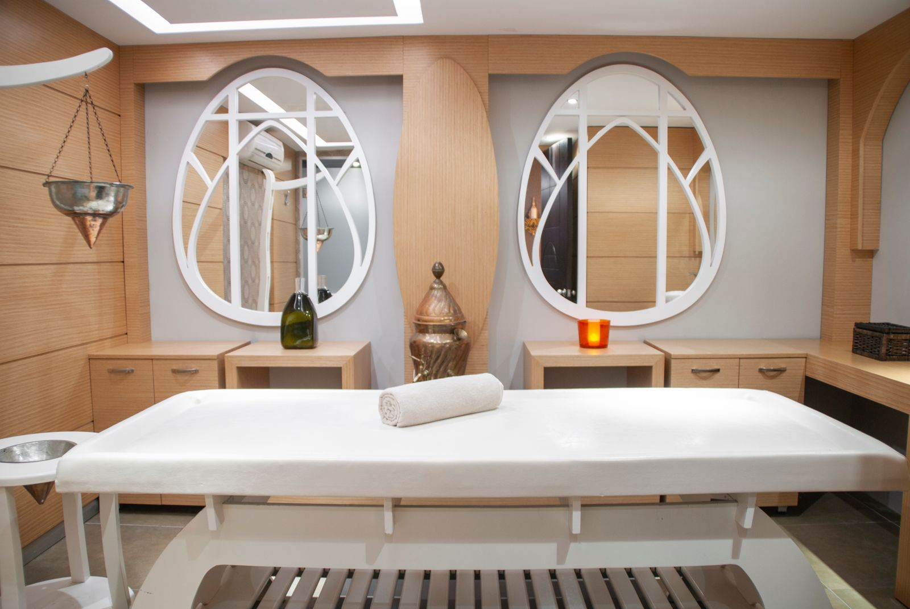
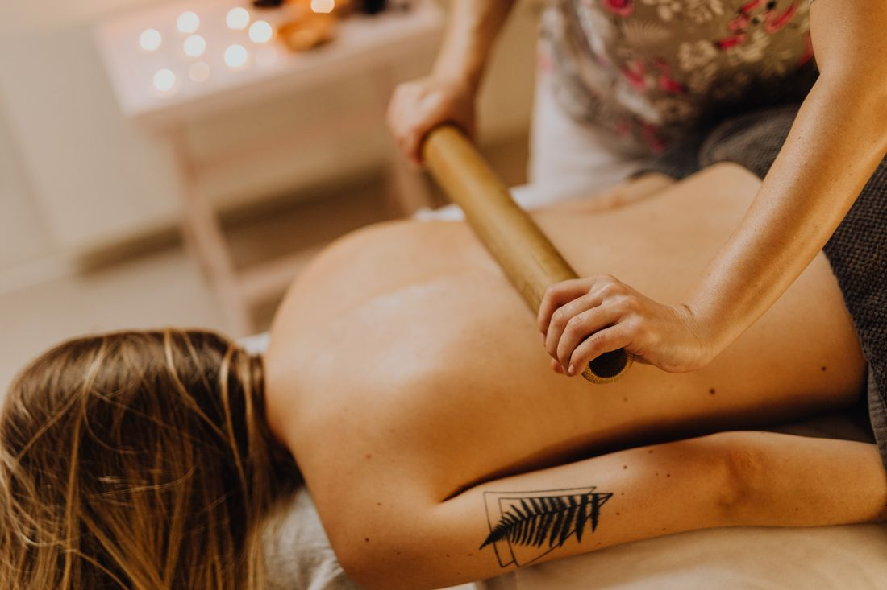
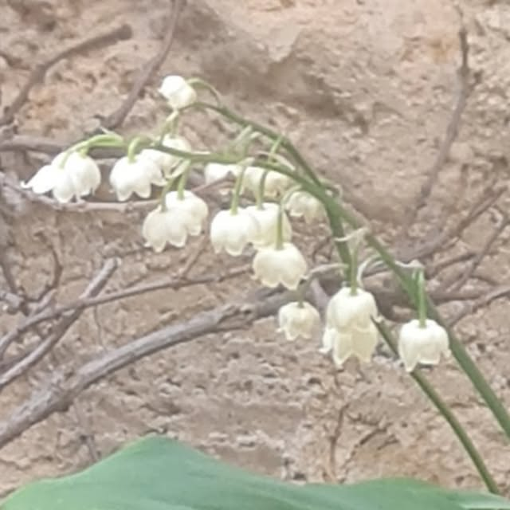
La praticienne
Christine masse depuis plusieurs années. Elle a posé Badira dans le centre historique de La Tour-d’Aigues avec une idée simple : offrir un endroit où l’on peut enfin lâcher prise, physiquement, mentalement, émotionnellement.
Ses clientes et clients en parlent mieux qu’elle : attentive, bienveillante, à l’écoute des besoins de chacun, capable de s’adapter à l’état du corps du jour. Au fil de ses formations, elle a réuni des techniques variées pour répondre à chaque demande.
« À bientôt pour révéler le bien-être qui est en vous… »
Prendre rendez-vousLes soins
Chaque soin s’adapte à vous. Faites défiler pour les découvrir, puis réservez celui qui vous appelle.
Défiler
Un moment de pause totale. Le massage s’adapte à vos besoins du jour : tout en douceur, ou plus profond pour dénouer les tensions.
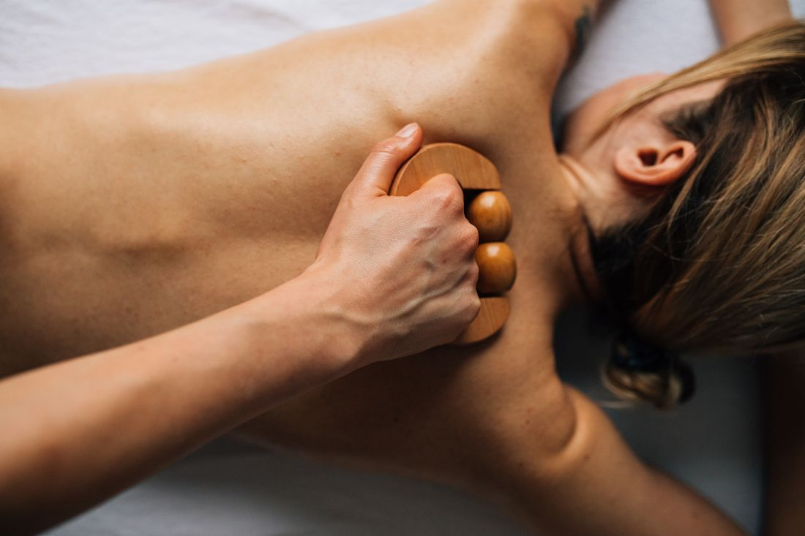
Manœuvres manuelles et instruments en bois, d’origine colombienne, pour travailler la silhouette et la minceur et se sentir bien dans son corps.
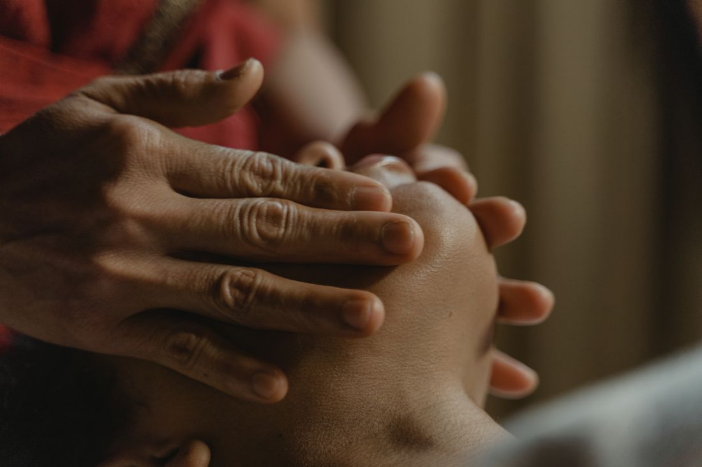
Un soin du visage pour relâcher les traits et prendre soin de sa peau : bien vieillir au naturel, sans artifice.
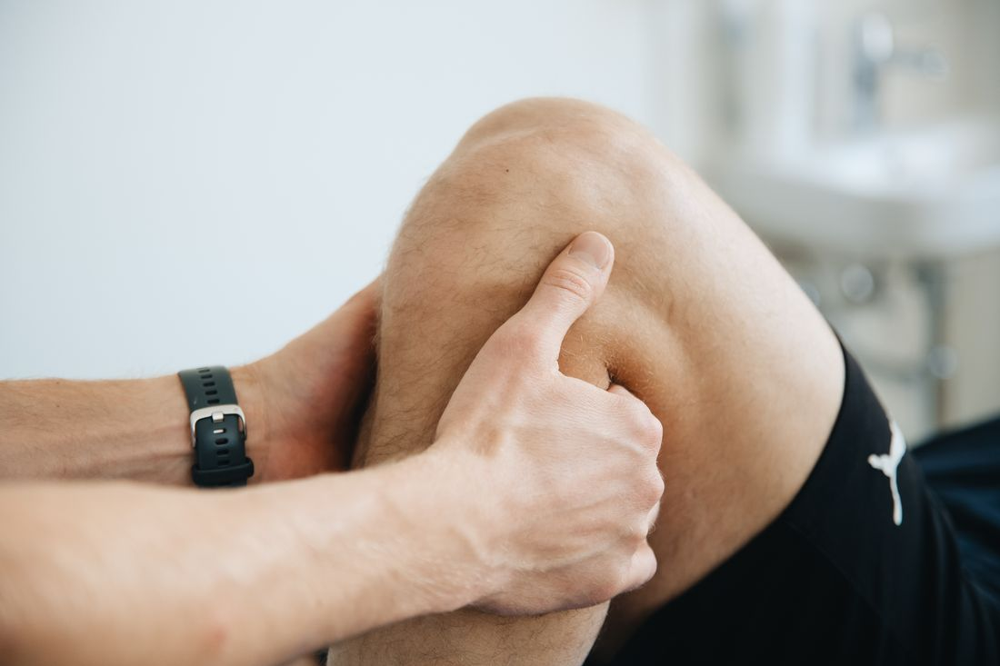
Après l’effort, ou après une semaine rude : un massage pour aider le corps à récupérer et repartir du bon pied.
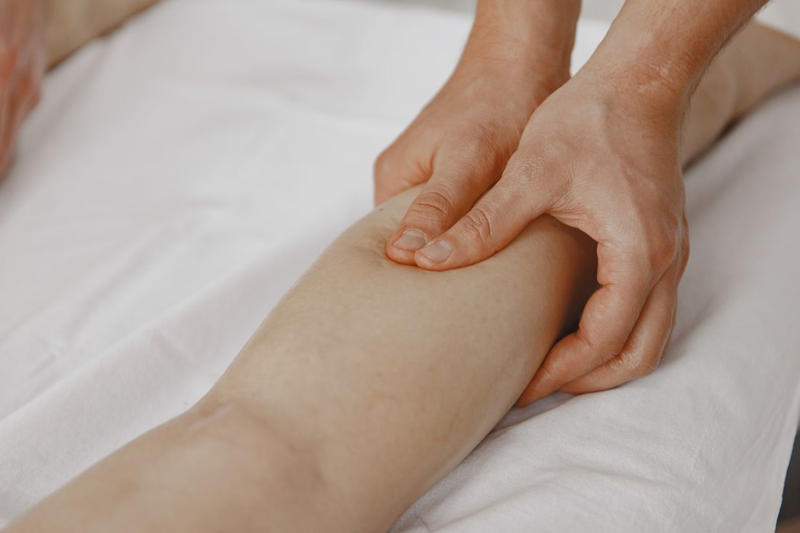
Des gestes enveloppants et rythmés qui laissent une sensation de légèreté. « Un véritable moment de détente entre des mains expertes. »
Un doute sur
le bon soin ?
Appelez ou écrivez à Christine : elle vous conseille selon ce que vous ressentez.
06 60 57 46 78La madothérapie
Une technique d’origine colombienne : des manœuvres manuelles et des instruments en bois. Touchez un point du cercle.
Colombienne
Son nom vient de « madera », le bois en espagnol. Une tradition née en Colombie, aujourd’hui pratiquée chez Badira.
Massage de bien-être, non médical.
Galerie
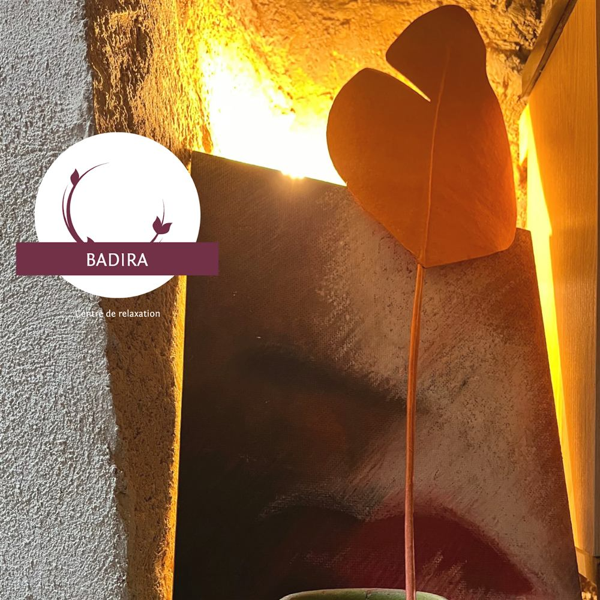
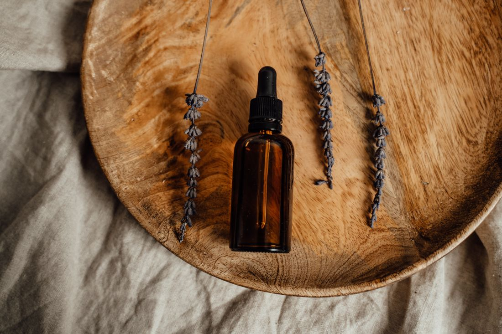
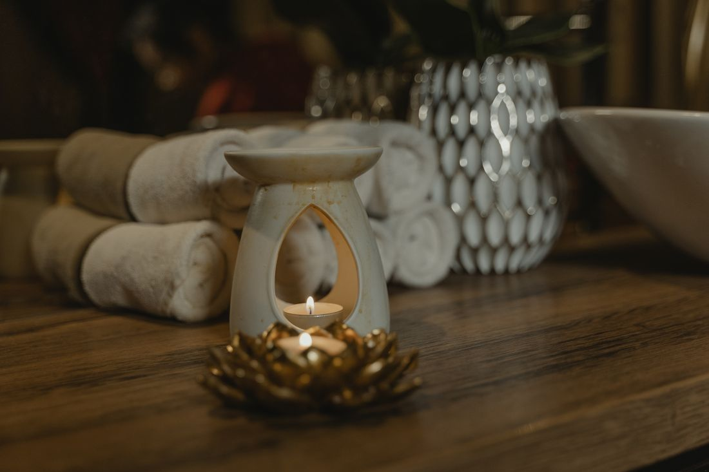
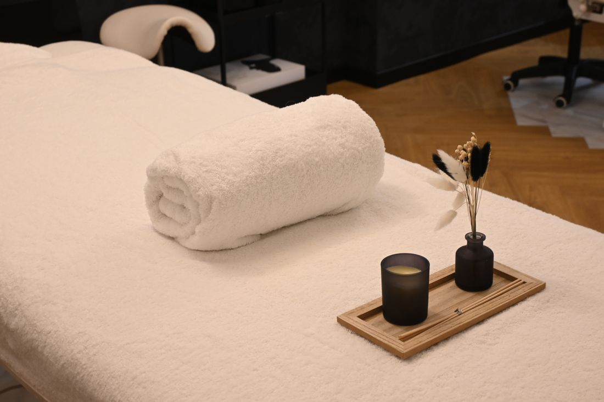
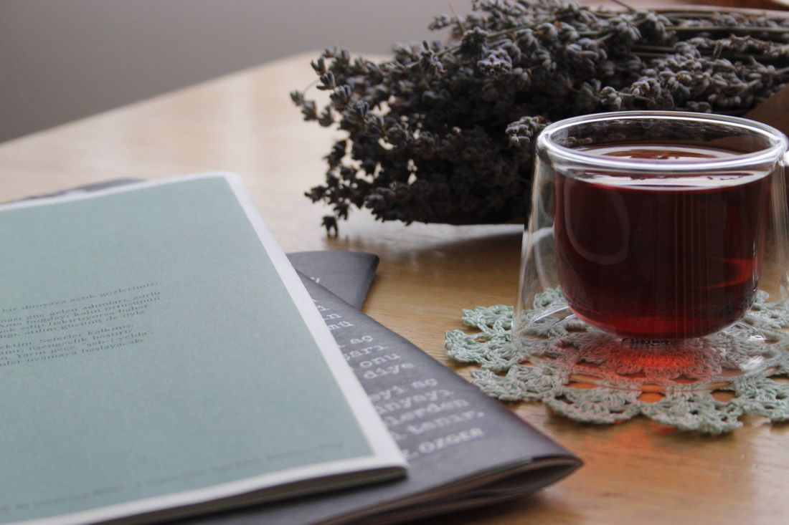
Avis clients
5,0 ★★★★★ 6 avis sur Google
Avis publiés sur la fiche Google « Badira » et sur PagesJaunes, reproduits avec le prénom et l’initiale.
Par téléphone ou par SMS au 06 60 57 46 78, ou grâce au formulaire de cette page, qui prépare pour vous un SMS prêt à envoyer. Christine vous confirme ensuite le créneau.
Les tarifs sont communiqués sur simple demande, par téléphone ou par SMS, selon le soin choisi.
Une technique d’origine colombienne qui associe des manœuvres manuelles et des instruments en bois. Elle vise la silhouette et la minceur, la récupération physique et sportive, et le bien-être du corps comme de la tête.
Lundi et mardi de 9 h à 13 h, mercredi, jeudi et vendredi de 9 h à 19 h, samedi de 9 h à 17 h. Fermé le dimanche.
86 rue du Vieux Château, dans le centre historique de La Tour-d’Aigues. Un parking accessible en fauteuil roulant est indiqué sur la fiche Google Maps.
Non. Ces soins sont des moments de détente et de bien-être, pas des actes médicaux. En cas de doute ou de pathologie, parlez-en à Christine avant la séance.
Réserver
Pas de plateforme, pas de compte : choisissez votre soin et votre créneau, votre téléphone prépare le SMS pour Christine. Elle confirme directement avec vous.
Ou appelez directement 06 60 57 46 78Nous trouver
06 60 57 46 78 · @badira_relaxation
| Lundi | 9 h – 13 h |
|---|---|
| Mardi | 9 h – 13 h |
| Mercredi | 9 h – 19 h |
| Jeudi | 9 h – 19 h |
| Vendredi | 9 h – 19 h |
| Samedi | 9 h – 17 h |
| Dimanche | Fermé |
♿ Parking accessible en fauteuil roulant